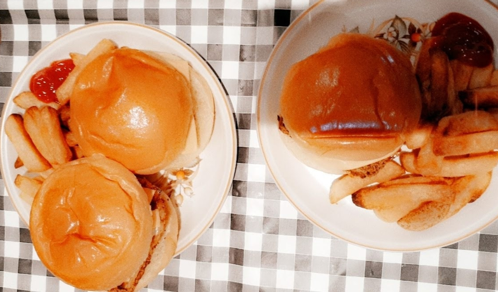

Fish Burger Recipe

Description
Another recipe on how to get someone else to make the food but pass it off as your own. DO NOT TRY THIS AT HOME
Ingredients
- Brioche Buns
- Fish burger preferably from Aldi
- Lettuce
- Tartar Sauce
Steps
- Get someone to preheat the oven and take over
- Place fish burgers on baking tray and enter into oven
- Cut lettuce into strands
- Toast the buns slightly on both sides
- Once the fish has been cooked, add onto burger
- Add first the lettuce and then the tartar sauce
- Close the bun and enjoy your food
Hopefully you are getting the idea that making food is for others to do. You are here to eat!
Return to main page